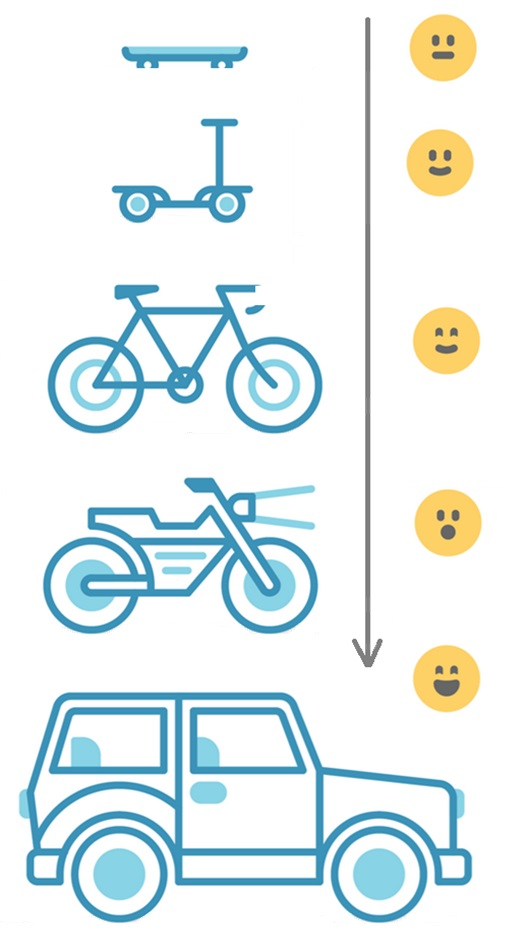

YANG-Push Specifications Gaps:
Extensible YANG model for YANG-Push Notifications
draft-netana-netconf-notif-envelope
YANG Notification Transport Capabilities
draft-netana-netconf-yp-transport-capabilities
Validating anydata in YANG Library context
draft-aelhassany-anydata-validation
YANG-Push Integration Gaps:
Support of Versioning in YANG Notifications Subscription
draft-ietf-netconf-yang-notifications-versioning
Augmented-by Addition into the IETF-YANG-Library
draft-ietf-netconf-yang-library-augmentation
YANG-Push Simplification:
YANG-Push Operational Data Observability Enhancements
draft-wilton-netconf-yp-observability